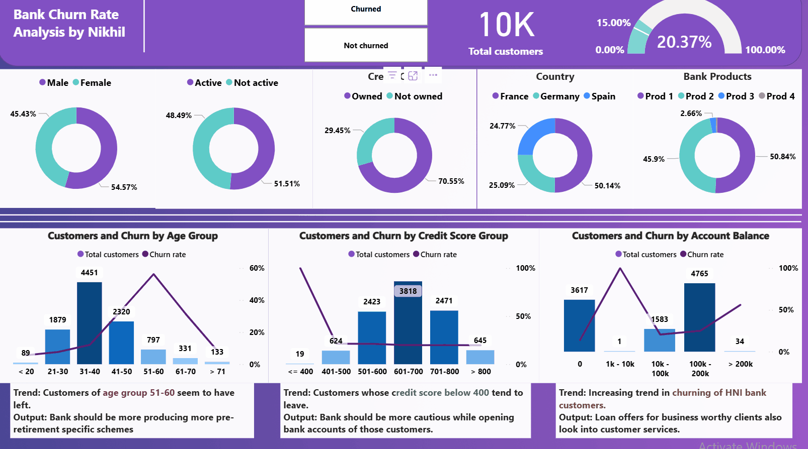
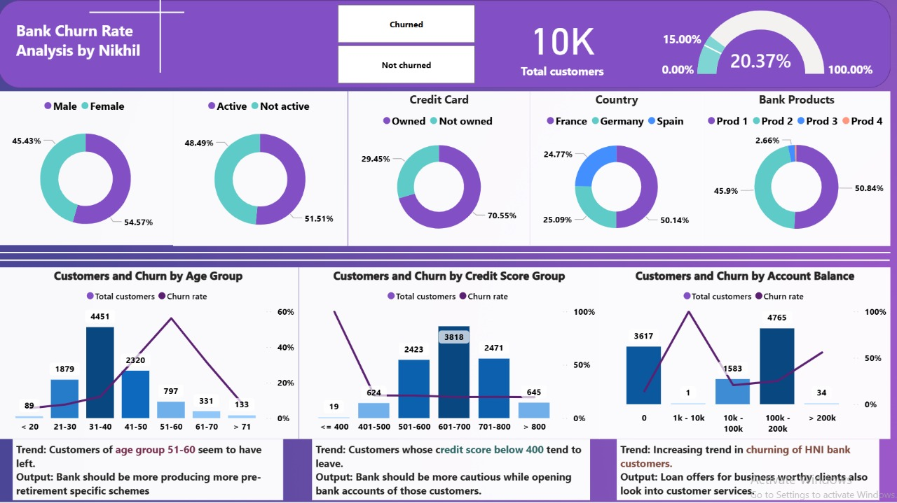
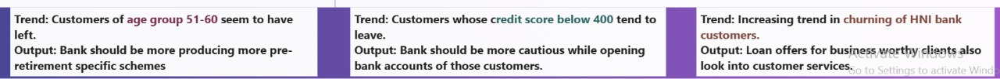

🏦 Bank Customer Churn Analysis – Power BI
This report examines customer churn in a bank, using Power BI to model, analyze, and visualise churn-driving factors.
📊 Dashboard Preview



📈 Insights
- Churn rate high for customers with <1 product
- Low tenure and low balance strongly correlated with churn
- Certain regions show increased churn—opportunity for targeted retention
📬 Contact
🔗 View GitHub Repo